Абсолютно твёрдое тело — второй опорный объект механики наряду с материальной точкой. Механика абсолютно твёрдого тела полностью сводима к механике материальных точек (с наложенными связями), но имеет собственное содержание (полезные понятия и соотношения, которые могут быть сформулированы в рамках модели абсолютно твёрдого тела), представляющее большой теоретический и практический интерес.
Абсолютно упругое тело в механике — частный случай деформируемого тела, которое после прекращения действия причины, вызвавшей его деформацию, полностью восстанавливает исходные размеры и форму, то есть в нём отсутствует остаточная деформация. Можно сказать, что абсолютно упругое тело — это тело, не обладающее диссипацией. Абсолютно упругих тел не существует, но эта абстракция полезна при решении многих физических задач.
Абсолютное пространство — в классической механике — трёхмерное евклидово пространство, в котором выполняется принцип относительности при преобразованиях Галилея.
Агрегатное состояние вещества — физическое состояние вещества, зависящее от соответствующего сочетания температуры и давления. Изменение агрегатного состояния может сопровождаться скачкообразным изменением свободной энергии, энтропии, плотности и других физических величин.
Амплитуда — это характеристика осцилляционного движения, волнового процесса или электромагнитного сигнала, определяющая максимальное отклонение смещения или другой величины, изменяющейся периодически или квазипериодически во времени.Это расстояние между наиболее удалённой точкой волны и точкой равновесия или положением середины.
Атом — частица вещества микроскопических размеров и массы, наименьшая часть химического элемента, являющаяся носителем его химических свойств.
Барионы — семейство элементарных частиц: сильно взаимодействующие фермионы, состоящие из трёх кварков
Броуновское движение — случайное движение частиц, взвешенных в среде (в жидкости или газе). Традиционное математическое описание броуновского движения основано на винеровском процессе, который даже в математических работах часто называют броуновским движением.
Вакуум — пространство, свободное от вещества. В технике и прикладной физике под вакуумом понимают среду, состоящую из газа при давлении значительно ниже атмосферного.
Вес — сила, с которой тело действует на опору (или подвес, или другой вид крепления), препятствующую падению, возникающая в поле сил тяжести.
Волна — изменение некоторой совокупности физических величин (характеристик некоторого физического поля или материальной среды), которое способно перемещаться, удаляясь от места своего возникновения, или колебаться внутри ограниченных областей пространства.
Время — форма протекания физических и психических процессов, условие возможности изменения. Одно из основных понятий философии и физики, мерило длительности существования всех объектов, характеристика последовательной смены их состояний в процессах и самих процессов, изменения и развития, а также одна из координат единого пространства-времени, представления о котором развиваются в теории относительности.
Газ, или газообразное состояние — одно из четырёх основных агрегатных состояний вещества, характеризующееся очень слабыми связями между составляющими его частицами (молекулами, атомами или ионами), а также их большой подвижностью. Частицы газа почти свободно и хаотически движутся в промежутках между столкновениями, во время которых происходит резкое изменение характера их движения.
Гравитация — универсальное фундаментальное взаимодействие между материальными телами, обладающими массой. В приближении малых по сравнению со скоростью света скоростей и слабого гравитационного взаимодействия описывается теорией тяготения Ньютона, в общем случае описывается общей теорией относительности Эйнштейна. В квантовом пределе гравитационное взаимодействие предположительно описывается квантовой теорией гравитации, которая ещё не разработана.
Давление на поверхность — интенсивная физическая величина, численно равная силе, действующей на единицу площади поверхности перпендикулярно этой поверхности
Деформируемое тело — физическое тело, способное к деформации, то есть тело, способное изменить свою форму, внутреннюю структуру, объём, площадь поверхности под действием внешних сил. Относительная позиция любых составных точек деформируемого тела может изменяться. Деформируемые тела являются противоположностью абсолютно твёрдых тел, которые определены их элементами. Идеальным представлением деформируемого тела является бесконечное количество частиц, наполняющих его
Диэлектрик (изолятор) — вещество (материал), относительно плохо проводящее электрический ток.
Жидкость — вещество, находящееся в жидком агрегатном состоянии, занимающем промежуточное положение между твёрдым и газообразным состояниями.
Инерция — свойство тела оставаться в некоторых, называемых инерциальными, системах отсчёта в состоянии покоя или равномерного прямолинейного движения в отсутствие внешних воздействий, а также препятствовать изменению своей скорости (как по модулю, так и по направлению) при наличии внешних сил за счёт своей инертной массы.
Закон Ома — физический закон, определяющий связь электродвижущей силы источника (или электрического напряжения) с силой тока, протекающего в проводнике, и сопротивлением проводника. Установлен Георгом Омом в 1826 году (опубликован в 1827 году) и назван в его честь.
Законы сохранения — фундаментальные физические законы, согласно которым при определённых условиях некоторые измеримые физические величины, характеризующие замкнутую физическую систему, не изменяются с течением времени. Являются наиболее общими законами в любой физической теории.
Импульс (коли́чество движе́ния) — векторная физическая величина, являющаяся мерой механического движения тела.
Коэффициент полезного действия (КПД) — характеристика эффективности системы (устройства, машины) в отношении преобразования или передачи энергии. Определяется отношением полезно использованной энергии к суммарному количеству энергии, полученному системой; обозначается обычно η («эта»). КПД является безразмерной величиной и часто выражается в процентах. Часто применяется в переносном смысле как метафора эффективности чего-либо без привязки к расчётам.
Закон Кулона — физический закон, описывающий взаимодействие между двумя неподвижными точечными электрическими зарядами в вакууме.
Масса — скалярная физическая величина, определяющая инерционные и гравитационные свойства тел в ситуациях, когда их скорость намного меньше скорости света
Механическая работа — физическая величина — скалярная количественная мера действия силы (равнодействующей сил) на тело или сил на систему тел. Зависит от численной величины и направления силы (сил) и от перемещения тела (системы тел).
Материальная точка (материальная частица, точечная масса) — обладающее массой тело, размерами, формой, вращением и внутренней структурой которого можно пренебречь в условиях исследуемой задачи. Является простейшей физической моделью в механике.
Механическая работа — физическая величина — скалярная количественная мера действия силы (равнодействующей сил) на тело или сил на систему тел. Зависит от численной величины и направления силы (сил) и от перемещения тела (системы тел)
Механическим движением называется изменение пространственного положения тела либо его частей относительно других тел по мере течения времени. При этом взаимодействие между телами вызывает изменение их скоростей либо деформацию. За исследование механического движения отвечает механика. Раздел, рассматривающий геометрические характеристики движения без учёта действующих на него причин, именуется кинематикой, а изучением этих причин занимается динамика.
Момент силы (момент силы относительно точки) — векторная физическая величина, характеризующая действие силы на механический объект, которое может вызвать его вращательное движение.
Плавление — это процесс перехода тела из кристаллического твёрдого состояния в жидкое, то есть переход вещества из одного агрегатного состояния в другое.
Плотность — скалярная физическая величина, определяемая как отношение массы тела к занимаемому этим телом объёму или как производная массы по объёму
Полупроводник — материал, по удельной проводимости занимающий промежуточное место между проводниками и диэлектриками, и отличающийся от проводников (металлов) сильной зависимостью удельной проводимости от концентрации примесей, температуры и воздействия различных видов излучения. Основным свойством полупроводников является увеличение электрической проводимости с ростом температуры.
Проводник — вещество, среда, материал, хорошо проводящие электрический ток.
Свободное падение — равноускоренное движение под действием силы тяжести, когда другие силы, действующие на тело, отсутствуют или пренебрежимо малы. На поверхности Земли (на уровне моря) ускорение свободного падения меняется от 9,832 м/с² на полюсах, до 9,78 м/с² на экваторе.
Скалярная величина в физике — величина, каждое значение которой может быть выражено одним (как правило, действительным) числом. То есть скалярная величина определяется только значением, в отличие от вектора, который, кроме значения, имеет направление. К скалярным величинам относятся длина, площадь, время, температура, электрический заряд, работа, статистический вес и т. д.
Скорость — векторная физическая величина, характеризующая быстроту перемещения и направление движения материальной точки относительно выбранной системы отсчёта. По определению, равна производной радиус-вектора точки по времени. В СИ измеряется в метрах в секунду.
Спектр в физике — скалярная функция частоты ,длины волны или, реже, другой физической величины (например, энергии, массы частиц), определяющая «относительную представленность» значений данной величины в изучаемом объекте: сложном сигнале, многокомпонентной среде и пр. С точностью до нормировки совпадает с плотностью или рядом распределения соответствующей величины.
Твёрдое тело — одно из четырёх основных агрегатных состояний вещества, отличающееся от других агрегатных состояний (жидкости, газов, плазмы) стабильностью формы и характером теплового движения атомов, совершающих малые колебания около положений равновесия.
Температура — скалярная физическая величина, характеризующая термодинамическую систему и количественно выражающая интуитивное понятие о различной степени нагретости тел.
Теплопроводность — способность материальных тел проводить тепловую энергию от более нагретых частей тела к менее нагретым частям тела путём хаотического движения частиц тела (атомов, молекул, электронов и т. п.). Такой теплообмен может происходить в любых телах с неоднородным распределением температур, но механизм переноса теплоты будет зависеть от агрегатного состояния вещества.
Энергия — скалярная физическая величина, являющаяся единой мерой различных форм движения и взаимодействия материи, мерой силы перехода движения материи из одних форм в другие для приведения её в состояние покоя.
Механическим движением называется изменение положения тел в пространстве относительно других тел с течением времени.
Векторное описание движения полезно, так как на одном чертеже всегда можно изобразить много разнообразных векторов и получить перед глазами наглядную «картину» движения.
Если вектор сонаправлен с осью, то его проекция равна длине вектора. А если вектор противоположно направлен оси — проекция численно равна длине вектора, но отрицательна. Если вектор перпендикулярен — его проекция равна нулю.
Если положительное направление оси ОХ противоположно направлению движения тела, то проекция скорости тела на ось ОХ отрицательна, скорость меньше нуля (v < 0), и тогда уравнение движения принимает вид:
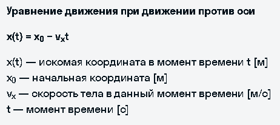Ускорение — векторная физическая величина, характеризующая быстроту изменения скорости. В международной системе единиц СИ измеряется в метрах, деленных на секунду в квадрате.
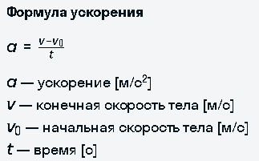Основная задача механики не поменялась по ходу текста — определение положения тела относительно других тел в данный момент времени. У равноускоренного движения в уравнении появляется ускорение.
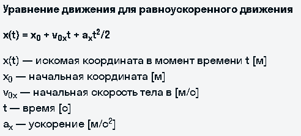Формула конечной скорости:
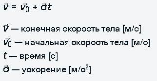Механическая энергия — это энергия, связанная с движением объекта или его положением, способность совершать механическую работу.
Кинетическая энергия — это энергия действия. Величина, которая очевиднее всего характеризует действие — это скорость.
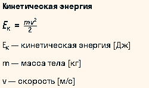Потенциальная энергия — это энергия ожидания действия.
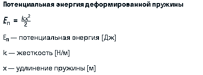Полная механическая энергия — это сумма кинетической и потенциальной энергий.
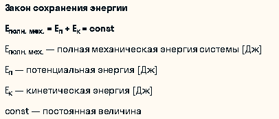При переходе теплоты от более горячего тела к более холодному температуры тел постепенно выравниваются и становятся едиными для обоих тел — наступает состояние термодинамического равновесия.
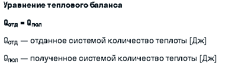Динамика — раздел механики в котором изучается движение тела под действием приложенных к нему сил.
Сила — мера взаимодействия тел. [F] = Н (Ньютон).
Инерция — явление сохранения состояния движения или покоя при отсутствии внешних действий.
Первый закон Ньютона: тело находится в состоянии покоя или равномерного прямолинейного движения до тех пор, пока воздействия со стороны других тел не выведут его из этого состояния.
Инертность — свойство тел по-разному реагировать на внешнее воздействие.
Второй закон Ньютона:Тело приобретает тем большее ускорение, чем меньшую оно имеет массу и чем большую силу мы к нему прикладываем.(F = ma)
Тела взаимодействуют друг с другом силами, равными по модулю, но противоположными по направлению, приложенными вдоль одной прямой.
1.Проведи линию действия силы. Для этого будет достаточно просто провести линию через силу в обе стороны.
2.Выбери ось вращения и посмотри кратчайшее расстояние от оси до линии действия. Кратчайшим расстоянием всегда будет перпендикуляр, опущенный с оси вращения на линию действия силы.
Например, на булыжник действуют силы F1 и F2, а сам булыжник зафиксирован на треугольнике. Ось вращения мы берём в той точке, где происходит их соприкосновение. Проводим пунктиром линию действия силы. Затем от точки О, которая является осью вращения, мы должны найти перпендикуляр к линии действия. На схеме ниже получается, что плечо силы F1 — это l1, а плечо силы F2 — l2.
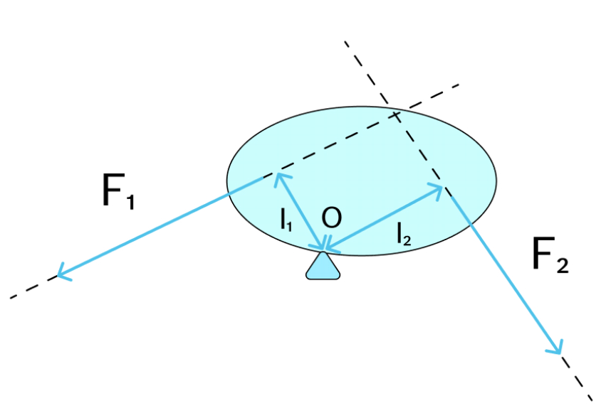Моментом силы называют произведение модуля силы, вращающей тело, на её плечо.(M=F*d)
Правило моментов:если рычаг находится в равновесии, то сумма моментов сил, поворачивающих рычаг против часовой стрелки, равна сумме моментов сил поворачивающих рычаг по часовой стрелке.
1.Сумма всех действующих на тело сил равна нулю. Это говорит о том, что нет никакой результирующей силы, которая могла бы вызвать движение тела.
2.Сумма моментов сил относительно любой точки также равна нулю. Это гарантирует отсутствие вращательного движения тела.
Электричество — это форма энергии, которая существует в виде статических или подвижных электрических зарядов.
Электрический ток — это упорядоченное движение заряженных частиц.
Чтобы внутри цепи существовал электрический ток, цепь должна быть замкнута и между концами участка цепи должно существовать напряжение.
Напряжение — скалярная (не имеющая направления) физическая величина, значение которой равно работе тока на участке цепи, совершаемой при переносе единичного электрического заряда из одной точки в другую.
Сила тока — это физическая величина, показывающая, какой заряд переносится через рассматриваемую площадь поперечного сечения за единицу времени .
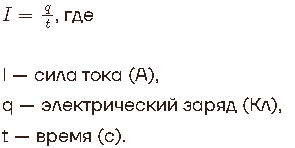Сопротивление — физическая величина, характеризующая электрические свойства участка цепи.
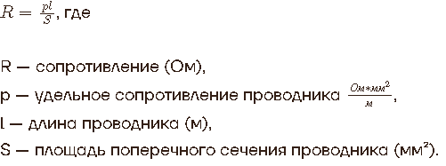Сила тока прямопропорцианальна напряжению и обратнопропорцианальна сопротивлению
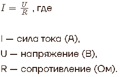При перемещении заряда по проводнику электрическое поле совершает работу (А):A=qU=Ut
Мощность — величина, обозначающая интенсивность передачи электрической энергии.
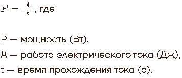Количество теплоты, выделяемое за время в проводнике с током, пропорционально произведению квадрата силы тока на этом участке и сопротивления проводника:
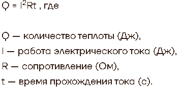